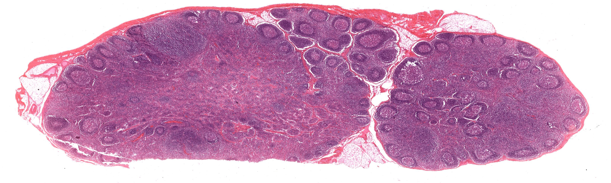
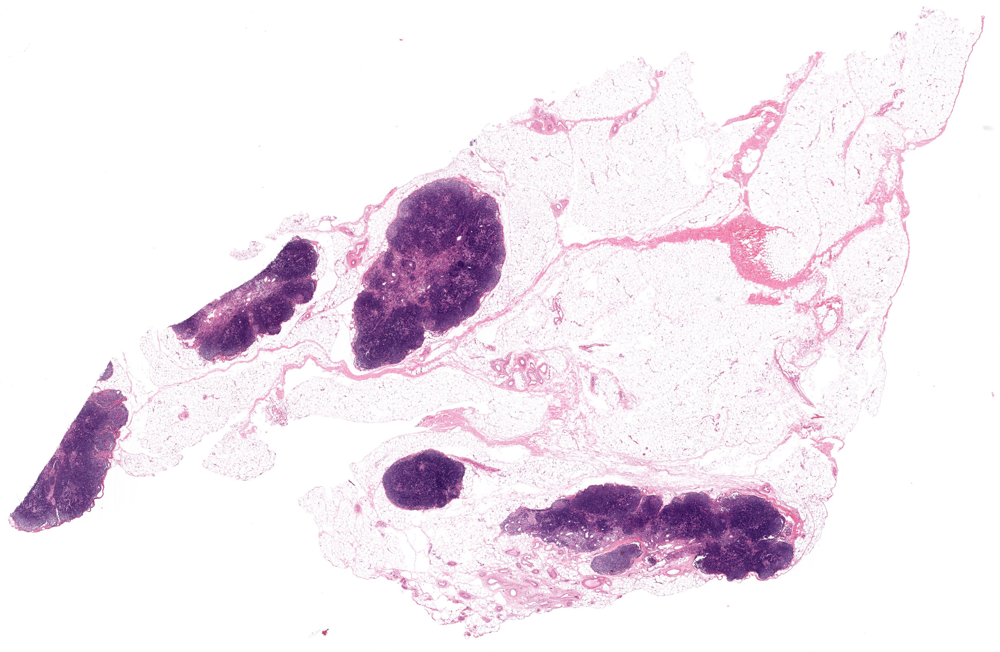
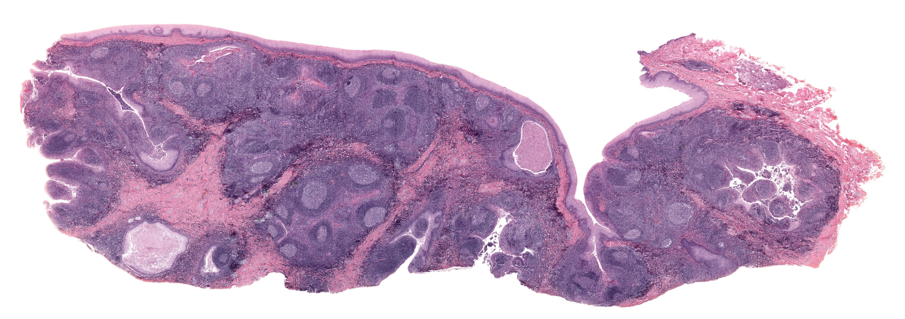
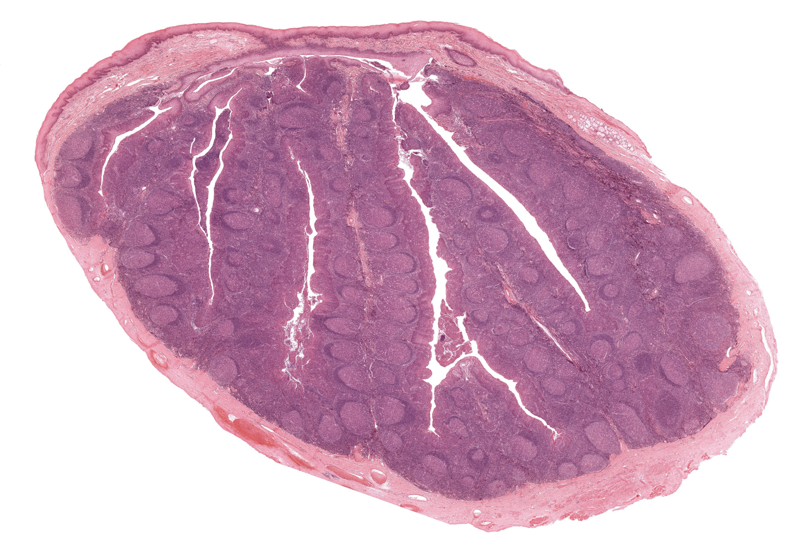
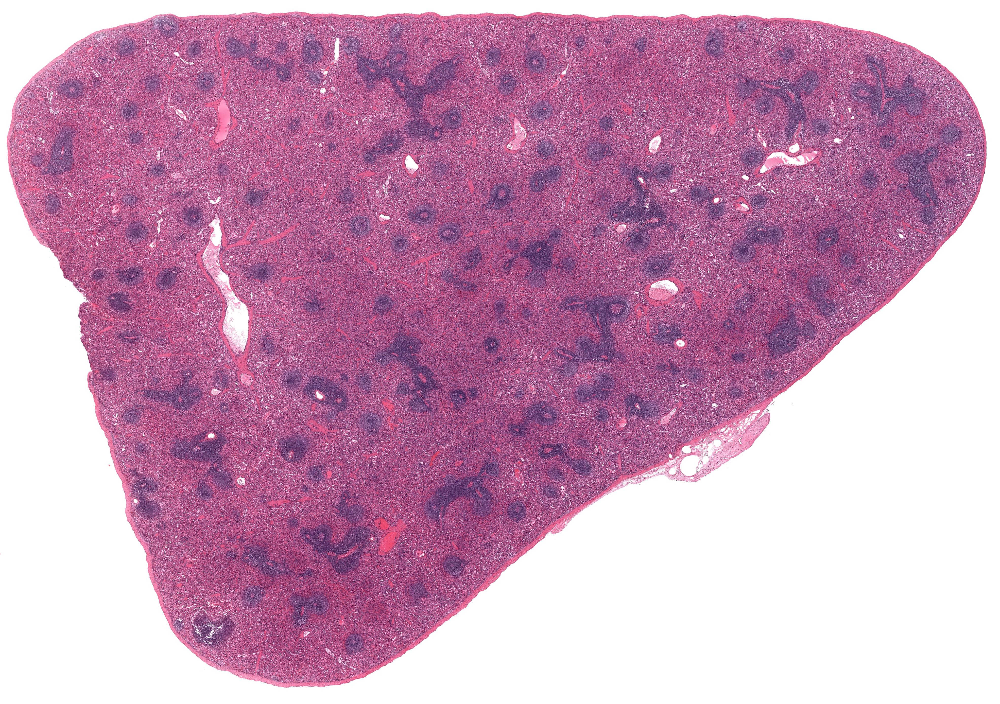
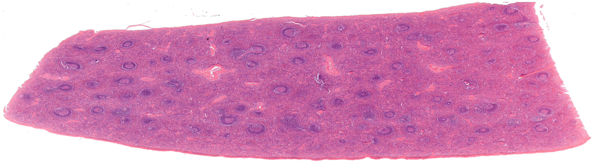
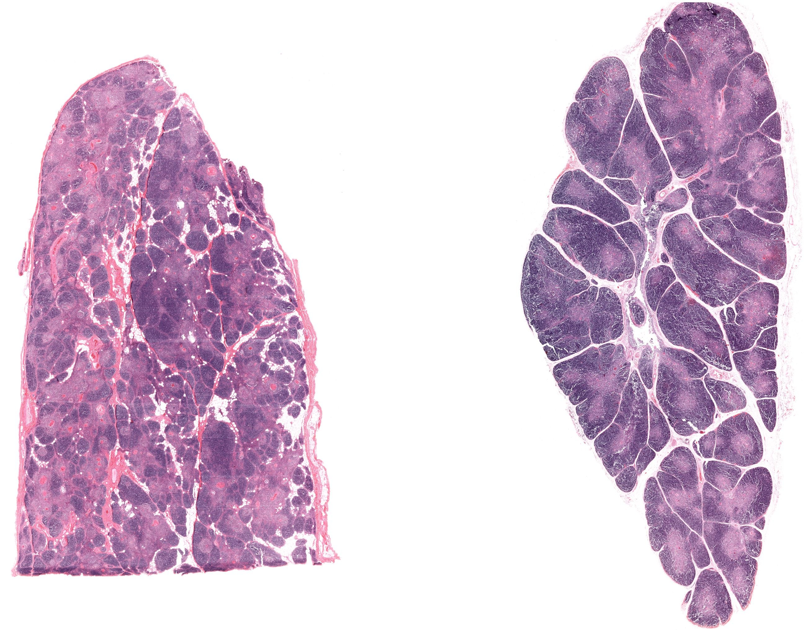
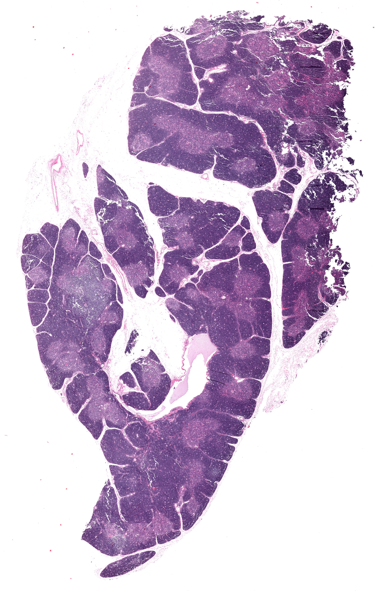

Chapter 10 · 器官系统
淋巴系统
Lymphoid System · 4 小节 · 9 张切片 · 12 张电镜 · 本地概览 9 张
本章导语
淋巴系统由淋巴器官、淋巴组织和淋巴管组成，是机体免疫应答的结构基础。本章依次观察淋巴结、扁桃体、脾和胸腺：前两者以淋巴小结和弥散淋巴组织为主，脾以白髓与红髓的分区为特点，胸腺则以皮质与髓质的分野及胸腺小体为标志。学习重点是各器官的实质分区、细胞组成和特征性结构，并联系它们在免疫中的不同分工。
复习重点
- 掌握淋巴结皮质与髓质的分区及各区的细胞组成。
- 掌握脾白髓与红髓的结构和功能分工。
- 掌握胸腺皮质与髓质的特点以及血-胸腺屏障的组成。
- 比较四种淋巴器官有无淋巴小结、被膜与小梁的差异。
易混淆对比
- 淋巴结 vs 脾：看淋巴小结有无中央动脉以及红髓、髓窦的分布
- 胸腺皮质 vs 淋巴结浅层皮质：胸腺皮质无淋巴小结，淋巴细胞密集而均匀
- 胸腺小体 vs 脾小梁：胸腺小体为同心圆细胞结构，位于髓质内
阅读提示：本页中文要点为自编复习笔记，不是原站正文的翻译；标本图像为经作者书面许可保存的中分辨率概览，每张卡片保留 © 署名与原页面链接，“原站本章/原站切片”可查看高倍与结构标注。本站为 Histology Guide 的非官方中文学习改编版，未经其认可或背书。
淋巴结
Lymph Node
- 被膜为致密结缔组织，伸入实质形成小梁，小梁间为淋巴组织。
- 皮质分浅层皮质、副皮质区和皮质淋巴窦三部分。
- 浅层皮质以淋巴小结为主，受抗原刺激后出现生发中心。
- 副皮质区为胸腺依赖区，含高内皮微静脉，淋巴细胞由此进入血流。
- 髓质由髓索与髓窦构成，髓窦内巨噬细胞丰富。
低倍镜低倍镜下先找被膜、皮质与髓质的分界及小梁
高倍镜高倍镜下确认淋巴小结、副皮质区的高内皮微静脉与髓窦
易混提示：皮质淋巴窦腔隙狭窄、细胞稀疏，易被误认作结缔组织间隙。
相关标本 · 3

点击图片放大 · 本地概览
MH 024-026 Mesentery
肠系膜（含淋巴结）
Lymph Nodes
H&E/Azan
本地概览
2970×1181
图像 © Histology Guide 及/或原始贡献者 · 非商业教育用途，经许可保存；原页面链接见下方

点击图片放大 · 本地概览
MH 076-077-078 Lymph Node
淋巴结（三种染色）
Lymph Node
H&E/Azan/Silver
本地概览
3273×987
图像 © Histology Guide 及/或原始贡献者 · 非商业教育用途，经许可保存；原页面链接见下方

点击图片放大 · 本地概览
MHS 213 Lymph Nodes
淋巴结（MHS 213）
H&E
本地概览
3724×2429
图像 © Histology Guide 及/或原始贡献者 · 非商业教育用途，经许可保存；原页面链接见下方
电镜照片 2 张（在线查看）
扁桃体
Tonsils
- 表面为复层扁平上皮，上皮向固有层凹陷形成隐窝。
- 隐窝周围的淋巴组织内有大量淋巴小结，生发中心明显。
- 扁桃体无输入淋巴管，被膜较薄，与周围组织分界不清。
- 腭扁桃体结构最典型，隐窝分支多而深，淋巴小结密集。
低倍镜低倍镜下寻找上皮凹陷形成的隐窝及其周围的淋巴组织
高倍镜高倍镜下确认隐窝上皮、淋巴小结与生发中心
易混提示：隐窝切面可呈多个互不相连的上皮岛，易误认为腺体。
相关标本 · 2

点击图片放大 · 本地概览
MH 081a Palatine Tonsil
腭扁桃体
H&E
本地概览
4365×1544
图像 © Histology Guide 及/或原始贡献者 · 非商业教育用途，经许可保存；原页面链接见下方

点击图片放大 · 本地概览
MHS 276 Tonsil
扁桃体（MHS 276）
H&E
本地概览
3467×2381
图像 © Histology Guide 及/或原始贡献者 · 非商业教育用途，经许可保存；原页面链接见下方
脾脏
Spleen
- 被膜为致密结缔组织并含平滑肌，伸入实质形成小梁。
- 白髓由动脉周围淋巴鞘和脾小结构成，后者含生发中心。
- 边缘区位于白髓与红髓交界，是抗原进入后首先接触淋巴细胞的部位。
- 红髓由脾索和脾血窦组成，脾索内含大量红细胞与巨噬细胞。
- 脾血窦内皮呈杆状，细胞间隙宽，基膜不完整。
低倍镜低倍镜下区分深染的白髓与富含红细胞的粉红色红髓
高倍镜高倍镜下确认中央动脉、脾小结与脾血窦内皮
易混提示：脾小结与淋巴结的淋巴小结形态相似，需依据中央动脉和周围红髓定位。
相关标本 · 2

点击图片放大 · 本地概览
MH 084-MHS 212-MHS 293 Spleen
脾（三种染色）
H&E/Azan/Silver
本地概览
3942×2776
图像 © Histology Guide 及/或原始贡献者 · 非商业教育用途，经许可保存；原页面链接见下方

点击图片放大 · 本地概览
MH 085 Spleen
脾（H&E）
H&E
本地概览
4365×1204
图像 © Histology Guide 及/或原始贡献者 · 非商业教育用途，经许可保存；原页面链接见下方
电镜照片 7 张（在线查看）
胸腺
Thymus
- 被膜伸入实质将胸腺分成许多小叶，每小叶分皮质与髓质。
- 皮质内胸腺细胞密集深染，上皮网状细胞构成支架。
- 髓质染色较浅，含特征性的胸腺小体，由上皮网状细胞同心圆排列而成。
- 血-胸腺屏障由毛细血管内皮、基膜、血管周隙和上皮网状细胞构成。
- 胸腺无淋巴小结，皮质与髓质的细胞组成一致而密度不同。
低倍镜低倍镜下确认被膜、小叶分界以及相邻小叶相连的髓质
高倍镜高倍镜下寻找髓质内嗜酸性同心圆结构的胸腺小体
易混提示：相邻小叶的髓质在切片中彼此相连，不要把髓质误认作结缔组织间隔。
相关标本 · 2

点击图片放大 · 本地概览
MH 079 Thymus
胸腺（成人及新生儿）
Adult and Neonatal
H&E
本地概览
2606×2035
图像 © Histology Guide 及/或原始贡献者 · 非商业教育用途，经许可保存；原页面链接见下方

点击图片放大 · 本地概览
MHS 210 Thymus
胸腺（MHS 210）
H&E
本地概览
3907×6151
图像 © Histology Guide 及/或原始贡献者 · 非商业教育用途，经许可保存；原页面链接见下方
电镜照片 1 张（在线查看）
本章电镜照片
2 张 · 需在线查看
电镜照片 2 张（在线查看）
自测
7 题 · 自编
先自己回答，再点“显示答案”。标记为易错的项目会进入复习模式。
淋巴结副皮质区为什么被称为胸腺依赖区？
概念
该区以胸腺来源的 T 淋巴细胞为主，依赖胸腺发育成熟
淋巴结髓质由哪两部分构成？
概念
髓索与髓窦
脾白髓由什么结构组成？
概念
动脉周围淋巴鞘与脾小结
脾红髓中脾血窦内皮的结构特点是什么？
概念
内皮细胞呈杆状，细胞间隙宽，基膜不完整
胸腺髓质中最有诊断价值的结构是什么？
识别
胸腺小体，由上皮网状细胞同心圆排列形成
脾与淋巴结在淋巴小结上的主要区别是什么？
对比
脾小结内有中央动脉，淋巴结淋巴小结位于浅层皮质而无中央动脉
扁桃体与淋巴结在淋巴引流上的差别是什么？
对比
扁桃体无输入淋巴管，淋巴结有输入淋巴管和输出淋巴管